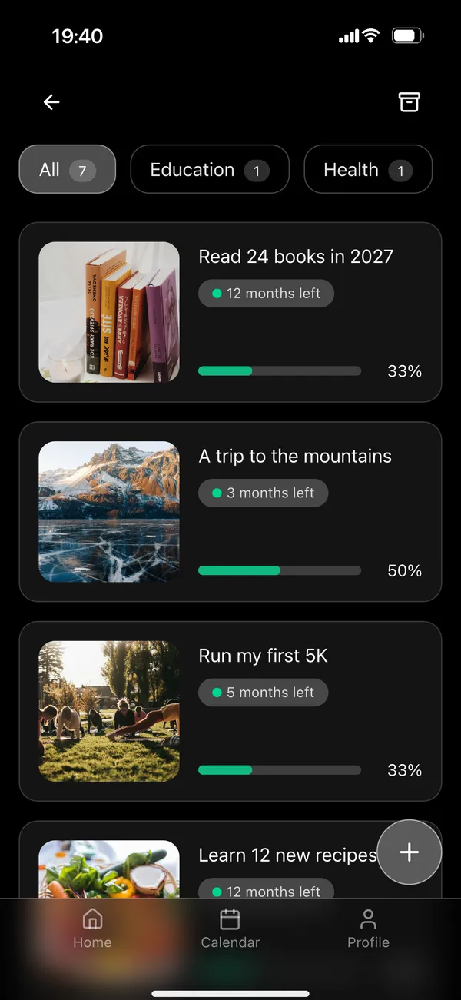
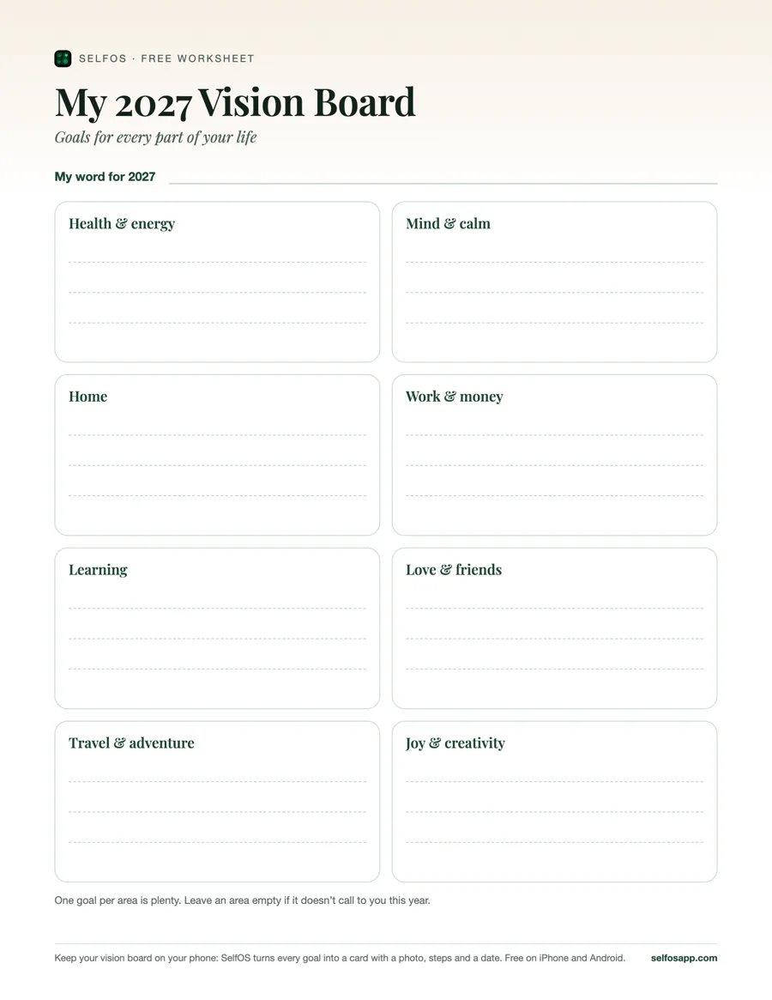

2027 Vision Board Ideas
Українською: Цілі на 2027 рік — приклади і шаблон
A vision board is a page of pictures that shows the year you want. It works best when every picture comes with a small next step. Here are ideas for every area of life, a free worksheet, and a simple way to keep your board on your phone.
Ideas for every area of life
How to make a vision board that works
- Pick three to six goals. A board with twenty goals turns into wallpaper.
- Choose one photo per goal that makes you feel something.
- Write the first step for each goal — something you could do this week.
- Add a date, even a rough one.
- Look at it every day: on your wall, in your planner or on your phone.
Free goals worksheet
Page one: your word for 2027 and one goal for each area of life. Page two: a card for each goal — my goal, why it matters, first step, by when and a photo idea.
Two printable pages (US Letter, PDF).
Download the worksheetYour vision board on your phone
In SelfOS every goal is a card with a photo, steps you can tick off and a deadline. The progress bar fills as you finish steps, and SelfOS reminds you a week and a day before a goal's date. Pick a photo from the built-in gallery, or use your own with Premium. The free version keeps two active goals at a time; Premium removes the limit.


Make your 2027 vision board in SelfOS
Goals with photos and small steps, gentle habits and a bonsai that grows with every day you show up. Free on iPhone and Android.
FAQ
When should I make a 2027 vision board?
Late December or early January works for most people, but any day is fine. Many people redo theirs in spring or on their birthday.
What should a vision board include?
A few goals from different areas of life, one picture for each, and a first step. A word for the year helps too.
Paper or digital?
Both work. Paper looks lovely on a wall; a digital board goes everywhere with you and lets you tick off steps.